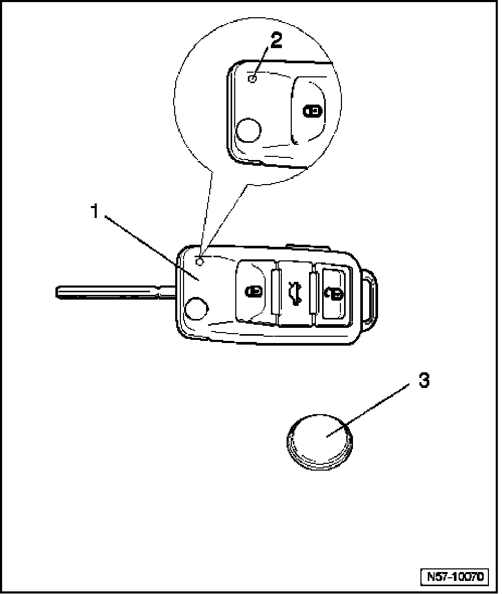

Keyless Entry Transmitter Battery: Locations
Batteries For Main Key (folding) With Radiofrequency Remote Control, Assembly Overview

1. Key with radio frequency unit
- Radio frequency unit cannot be replaced separately
2. LED
- This LED must light up during operation of radio-frequency remote control.
- If LED does not light up during operation of radio-frequency remote control, battery is discharged and must be replaced.
3. Battery